圖解 05｜肌力：最被低估的防傷工具
完整研究：05_肌力分析、10_四國研究與制度 · 回到 首頁
📌 重點摘要卡
- 一句話核心： 肌力訓練是最有證據的防傷工具；伸展幾乎無防傷效果。
- 關鍵數據： 受傷相對風險：肌力 0.315、平衡 0.550、伸展 0.963｜弓步佔嚴重傷聯想動作 32.2%
- 因果流程：
弓步煞車期大負荷➔離心肌力與肌腱逐步適應➔受傷風險下降、推蹬更有效 - 跨域應用： 羽球訓練：每週 2 次肌力，間隔 48 小時。數據模型：讀懂相對風險（RR）與信賴區間。IT 教學：用力板／加速度計數據畫弓步受力曲線。
❓ 先猜一猜
很多球隊賽前花最多時間做伸展來防傷。統合 25 項隨機試驗（26,610 人）後，伸展的防傷效果是多少？ 答案：幾乎是零（相對風險 0.963）。肌力訓練則把受傷風險降到約三分之一。
🎬 動畫一：弓步的兩個階段

- 煞車期：前腳著地，股四頭肌一邊用力一邊被拉長（離心收縮 eccentric），膝和跟腱受力最大。
- 推蹬期：把身體推回中心，準備下一拍。
🎬 動畫二：哪一種訓練最能防傷？

📊 數據一覽
| 訓練 | 相對風險 RR | 白話 | 來源 |
|---|---|---|---|
| 肌力訓練 | 0.315 | 受傷約降到三分之一 | Lauersen 2014，BJSM |
| 本體感覺（平衡）訓練 | 0.550 | 約降一半 | 同上 |
| 伸展 | 0.963 | 幾乎沒有效果 | 同上 |
| 台灣國中選手 6 週複合式訓練（陳駿烽 2025，18 人） | 前測 | 後測 | 變化 |
|---|---|---|---|
| 20 m 衝刺（秒） | 3.57 | 3.22 | −0.35（約 −10%） |
| 敏捷 T 測驗（秒） | 11.79 | 10.91 | −0.88（約 −7%） |
⚠️ 讀這組數字要小心
只依論文摘要、樣本 18 人；6 週快 10% 幅度很大，需看全文確認測量方式。
🧭 一週肌力怎樣放
flowchart LR
A["週一 肌力 A<br/>下肢最大力量"] -->|間隔 48 小時| B["週四 肌力 B<br/>增強式＋複合式"]
B --> C["每節最後<br/>落地控制・單腳停 2 秒"]🧠 延伸知識
📝 肌肉長得快，肌腱跟得慢
肌腱對訓練的適應比肌肉慢。跳躍量突然大增時，肌肉撐得住，肌腱未必跟得上，這是髕腱、跟腱過度使用傷的常見背景。所以跳躍和弓步的總量要逐步加，不要一次跳很多。
📝 鞋子幫得了多少？
台灣相子元團隊發現：5° 外側楔形鞋讓前弓步煞車期垂直力 +3.86%、水平力 +7.77%；而中底越厚不等於越減震。選鞋有影響，但取代不了步法和肌力訓練。
✅ 30 秒自我測驗
❓ 1. 弓步哪一個階段膝蓋受力最大？那時肌肉在做甚麼收縮？
煞車期；股四頭肌做離心收縮。
❓ 2. 肌力訓練、平衡訓練、伸展，防傷效果怎樣排？
肌力（RR 0.315）> 平衡（0.550）>> 伸展（0.963，幾乎無效）。
❓ 3. 為甚麼跳躍量不能突然加很多？
肌腱適應比肌肉慢，容易出現過度使用傷。